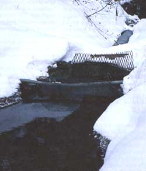
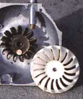
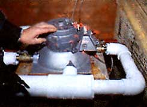
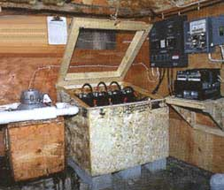
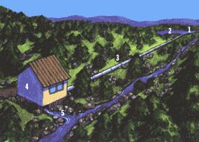
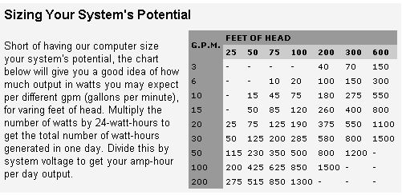

Energy and Environment
Living off the Grid, Part III
If you thought hydroelectric power was only practical at the bottom of a cascading torrent of water... you're in for a surprise. Tapping the natural force of even small streams using modern turbines can offer a lifetime's escape from utility bills.
Two years ago, Norm and Sue Benzinger, owners of th Coulter Lake Guest Ranch, a wilderness retreat in th Rockies, had a problem: They were seeing too much of the propane delivery man.
The ranch's propane bill had topped $10,000 in 1992-much of it consumed by a generator. Hoping to slash his energy costs, Norm contacted Ken Olson, a renewable energy expert who directs Solar Energy International in nearby Carbondale, Colorado.
"He said he had a stream falling down the hillside," recalls Olson. "Turned out it was a great water power site."
Working together, Olson and Benzinger installed a hydroelectric turbine. Now the generator, which used to drone for hours a day, has fallen silent. A water power system that cost $6,000 will save $2,500 in its first winter.
Over the last 10 years, small-scale hydropower technology has taken a quantum leap thanks to the invention of the microturbine. Inside a metal case that is smaller than a bread box, a miniature water wheel, not much bigger than a cinnamon roll, is coupled to a pickup truck generator. When the wheel is spun by a jet of pressurized water, electricity is created. The design is simple yet sophisticated, a triumph of appropriate technology.
Progress has also been fueled by the dramatic evolution of solid-state inverters and load controllers-the brains in the Benzingers' system. A decade ago, inverters, which transform direct current (DC) to alternating current (AC), and con trollers, which govern electrical production, were dumb, unreliable, and inefficient beasts. Tamed with computer chips, they now perform the same tasks in a much more intelligent, reliable, and energy-efficient manner.
Together, these advances have revolutionized the world of homeowner hydro. Because a microturbine requires only a few quarts or gallons of water per second, it's now possible for even a slender stream to provide all the electricity a house or modest farm requires.
Although this technology sometimes makes sense for people whose homes are already connected to the utility, it's most economical for those living, or contemplating, life "off the grid"-a group that includes homesteaders as well as farmers and ranchers who irrigate or own water impoundments. With utilities charging $10,000 or more to extend power lines a mile, an understanding of hydro basics can prove valuable indeed.
Hydropower is one of the oldest forms of alchemy, a way to convert falling water into wealth. Historically, that wealth has been measured in many coins: milled flour, sawed wood, and pumped water. Today, the currency of choice is most often the kilowatt-hour.
By almost every measure, water power is the world's best energy resource. What's cleaner? Cheaper? Even among renewables, hydro is a head above. Falling water is more reliable than the wind, and it works at night, too, unlike the sun. Per dollar invested, a hydro system will typically produce three to 10 times more energy than a photovoltaic (PV) or wind power system.
Hydro's disadvantage? It discriminates against the many in favor of the few. The wind and sun are democratic: everyone gets some. Water does not spread its blessings; it concentrates them. You either have water or you don't. And most don't.
For this reason, hydropower has always been viewed as a finite resource. We humans can mine more coal or build more PV panels, but it's not in our power to make rivers or invent streams. Today, however, thanks to the inspired tinkering of a handful of ingenious engineers, the landscape has changed. No new rivers have been created, but the horizon has moved nonetheless, the scope for alchemy extended. Good hydro sites remain rare. But they're less rare than ever before. Now even a brook or creek can be spun into gold.
In the vocabulary of hydro experts, the word typical is typically missing. "Every site is different," they insist.
"Every installation, unique:" Talking to them, you get the impression they'd sooner cut off a finger than com pose a rule of thumb.
That said, the system at the Coulter Lake Guest Ranch is, in many respects, typical. A short distance uphill from the lodge is a screened concrete box, the intake, which channels water into a pipe or penstock. After falling downhill, the penstock terminates in a small shed or, to give it its fancy name, powerhouse. Inside are the turbine, generator, batteries, inverter, and load controller. After passing through the turbine, the water flows out of the powerhouse through another pipe and into a rock-lined ditch or tailrace.
What is most remarkable about the setup is its water source-a spring-fed ditch three feet wide and six inches deep. Just half this piddling quantity feeds the turbine, enough to produce 400 watts continuously, plenty to power the Benzingers' lodge or a home.
To anyone familiar with electricity, that statement may sound absurd. After all, 400 watts is only enough power for four 100-watt lights-and a refrigerator momentarily draws 1,500 watts when its motor starts. But 400 watts, over 24 hours, is 9,600 watt-hours. And, believe it or not, that will amply fuel a modern version of what Zorba the Greek once jokingly referred to as the "complete catastrophe": husband, wife, kids, fridge, freezer, washing machine, dishwasher, microwave, computer, VCR, stereo, Dustbuster, Crockpot, plus a garage full of power tools. Note that these are standard, 110-volt tools and appliances-Makita, Kenmore, Maytag, whatever. You're not outfitting your house from an RV catalog.
There is, of course, a hitch. In most residential systems, you can't use an electric stove, electric hot water heater, or electric clothes dryer. They guzzle too much juice. No baseboard heat, either. For cooking, drying, and space heating, a hydro household will rely on sun, wood, and propane.
But wait. If a system only provides 400 watts at one time, what supplies the surges of power needed to start that refrigerator motor? For that matter, where does the power come from when 10 lights, stereo, washer, computer, and TV are all running in the evening?
Batteries. An inverter draws juice stored in a battery bank to start motors and meet evening and morning peak needs. The batteries recharge when the lights go off, or the next day when the kids are at school.
Thus, if you are willing to heat your food, home, and water with some combination of propane, wood, and sun, then a 300- to 500-watt system will provide all the electricity you need and then some. Nor is 300 watts the lower limit, particularly if you use energy-efficient lights and appliances. A 50-watt turbine, the Lil Otto manufactured by Bob-O Schulze, can power a weekend cabin, while 100-200 watts is adequate for an energy-conscious household. Don Harris, who built the Benzingers' machine, runs two houses and his shop (lathe, mill, etc.) on 150 watts of hydropower.
WHAT'S YOUR HEAD AND FLOW?
These two most important variables dictate how much hydropower can be produced.
If the owner of a PV system needs more power, they buy another module or two. In hydro, though, what you have is what you have. Moreover, the correlation between how much money a hydro system costs and how much power it generates is not linear. Sometimes it's inverse. A marginal site may cost more to develop, yet generate less power, than a prize winner. It all depends on stream size, penstock length, and other variables.
That said, a 400-watt system would typically cost $4,000 to $6,000, broken out like this: turbine, $700-1,000; batteries, $800-1,600; solidstate inverter and load controller, $1,200-2,000; transmission line and other electrical equipment, $500- 1,000. To this, add the price of penstock pipe (in some systems, the largest single cost) and of the intake, powerhouse, and labor.
Once you've bought a system, "fuel" is free. Since hydro systems are very reliable, annual maintenance costs should be $100 or less. But plan on replacing the batteries every decade or so.
Smaller systems are less expensive. A weekend cabin setup might run $800 to $1,500. And if you already own a wind power or PV system, adding a hydro turbine to help charge your batteries can cost as little as $400.
So far we've been talking about DC or "battery-based" systems, where alternating current is supplied by an inverter. But if you are blessed with water-say, 10 times more than you need for a DC system-you may be able to dispense with the inverter and generate AC directly.
Nine years ago, David Scott, a teacher who lives six miles off the grid near Gypsum, Colorado, got tired of trudging through the snow each morning to start a propane generator. Back then, his family was using 6,000 gallons of propane each winter to provide heat, hot water, and electricity to the three buildings on their property. Energy costs were eating them alive.
One summer Scott installed a hydro system. It wasn't cheap. Expenses-not including his time or use of a friend's backhoe-were $14,000, half of it for 4,000 feet of 8" pipe. By the end of August, though, Scott was the proud owner of a 35,000-watt (35-kilowatt or 35-kW), hydro system that, in his words, "sounds like a Boeing 747 when you turn it on:" (It ought to: Water enters his turbine at 98 mph.)
This system generates a staggering amount of electricity, whose retail value is about $21,000 a year. Since there's no utility to sell it to, Scott uses it to light and heat his house, a guest house, and a 1,600-ftz apartment. The surplus goes through a transformer and then to a neighbor, who uses it to heat and power his house.
Although Scott's AC system is much larger than most, it illustrates the possibilities. Over an eight-year span, it's been shut down four times for routine maintenance. And with a useful life of 50 years or more, it's already paid for itself many times over.
"Just in Colorado, there are probably dozens of places that could be doing this," says Scott. "Few people realize how fairly simple it is."
Although AC systems cost $7,000 to $20,000 and up, they provide much more electricity than a battery-based system at a cheaper per unit cost, often including a surplus that can heat a hot tub, radiant floor, greenhouse, or what have you. But one principal advantage of an AC system-no batteries-is also a principal constraint. An AC system must be big enough to start a refrigerator motor, with power left over to meet evening and morning peaks. For this reason, most AC systems are 3 kW or bigger, with 5 to 8 being optimal. Below 2 kW, you'll have to go with DC and an inverter.
There is rarely any need to agonize over the AC versus DC choice, because generally speaking it doesn't exist. At nine of 10 sites, AC isn't an option. The reason has to do with head and flow.
Short of having our computer size your system's potential, the chart below will give you a good idea of how much output in watts you may expect per different gpm (gallons per minute), for varing feet of head. Multiply the number of watts by 24-watt-hours to get the total number of watt-hours generated in one day. Divide this by system voltage to get your amp-hour per day output.
"What's your head and flow?"
Call Powerhouse Paul to talk hydro and that's the first question he'll ask. These variables dictate everything-how much power can be produced, what type of turbine is best, what size penstock pipe is required, and so forth.
Head (or "drop" or "fall") is the vertical distance between the intake at top and turbine at bottom. Flow is the quantity of water passing through the turbine.
Hydropower texts are replete with arcane equations, but the relationship between head and flow is not complicated. To determine your site's power potential, multiply the two. For example, a site with 10 units of flow and one unit of head will produce 10 units of energy, as will a site with one unit of flow and 10 units of head.
In the equation, head and flow are equally valuable. On the ground, though, head trumps. Yes, power can be generated at heads as low as three feet, but this re quires tremendous quantities of water, large turbines, expensive diversion structures, and expert planning. For backyard applications, you'll want at least 15 feet of head, and preferably 50 feet or more. On the other hand, you don't need much flow. Microhydro isn't really "garden hose" technology, but in terms of water required, it's close.
Recall that 400 watts will power a house. To generate that we'd need approximately: 100 gallons a minute falling 50 feet. Or 50 gallons a minute falling 100 feet. Or 25 gallons falling 200 feet. Or 16 gallons-a mere quart each second!-falling 310 feet.
The implication is clear. A rill, tiny brook, step-across creek, mountain spring, irrigation ditch-with enough head behind it-trickle of water from any of these can produce a torrent of power.
As head drops below 50 feet, power production diminishes and the economics of small hydro systems become increasingly tenuous. Nonetheless, if you've got a small pond a mere 25 feet above from which you can divert 100 gallons a minute, you can still generate 200 watts. Combine that with efficient lightbulbs and appliances, and you've got energy independence.
Okay, you've got a possible hydropower site. How do you assess its potential?
Two people can survey most sites in a day or less. You'll need a notebook, pencil, stopwatch, tape measure, bucket, shovel, and plastic tarp. Wear tennis shoes. Your feet will get wet.
Head first. Although a topographic map or handheld altimeter will provide a rough idea, more precise measurement requires some sort of level. In open terrain, use a builder's level or transit, four-foot carpenter's level, or cigarshaped sight level.
If you know what a transit is, you probably know how to use one. To use a carpenter's level or sight level, cut a staff of known height a few inches shorter than you are tall. Start at the proposed turbine location. Put the level on the staff and center its bubble. Then sight along it as your assistant climbs the hill. When his or her feet are level with your eye, have them stop. Bring the level up to that point and continue in this fashion uphill. At the intake, total your results.
In brushy terrain, use a water level-a 50-foot length of tubing attached to a plastic container-that can be snaked around trees, rocks, and other obstacles. Water levels are accurate and easy to use. They can be bought for $30 or cobbled up for $10.
A third method-perhaps simplest of all-exploits the fact that every foot of head equals 0.43 pounds per square inch (psi) of water pressure. Screw two or more hoses together, carry them to the intake and fill with water. Attach a pressure gauge to one end and carry it downhill. Note the pressure. Bring the other end to that spot (keep the hose full!) and repeat. At the bottom, divide your psi readings by.43. That's your head. Keep track of hose lengths, too, and you'll know how long your penstock needs to be.
Head is fixed. It won't change in a lifetime. Streamflow is trickier. It's always in flux. Are you measuring during snowmelt? In the dry season? After a big rain?
Since any single measurement of flow is probably unrepresentative, it's best to measure flow repeatedly over the course of a year. What you want to establish is the reliable yield. Try also to establish a winter flow, since that's the season you'll probably use most electricity. This will help you determine how close hydro will come to meeting your energy needs.
There are many ways to measure flow. For a shallow stream, three or four feet wide, the bucket-and-stopwatch method is simplest. Build a temporary dam with stones, dirt, and plastic tarp, leaving an outlet to one side. Next, improvise a trough (a piece of culvert or metal roofing works well) to channel the entire stream into a container of known volume. Time how long it takes to fill. If a five-gallon bucket fills in 15 seconds, the flow is 20 gallons per minute.
As stream size increases, measuring flow becomes more difficult. Unless you contemplate an AC system, it also becomes somewhat less important. Remember, if you've got 50 feet or more head, two gallons a second is all you really need.
The best way to measure stream flow in large streams is to dam them with a wooden weir, with a rectangular opening of known size in its center. (Sometimes easier said than done.) Next, measure the difference in height between the bottom of that opening and the top of the pond that forms a few feet upstream. Plug this measurement into a "flow rate weir table" (found in a hydropower textbook) to get your flow.
Strive to be accurate as you measure head and flow, but don't worry if you're off by a few inches or ounces. Close enough is good enough.
After measuring head and flow, and estimating your power output, you decide to build. The first step is to obtain the necessary permits. Here, generalizations really are useless. In some states, small hydro systems aren't regulated. In others, they get lumped in with domestic water systems, which rarely encounter permitting problems. (If you are developing a new homesite, design your penstock to provide both water and power.) Finally, there are states, California for example, where the red tape is more formidable.
In truth, many people fail to get a permit, either as an act of civil disobedience or because they fear bureaucrats who strain at gnats while swallowing camels or because they just don't want to bother. But this can be risky.
Remember, water regulations are designed to protect you as well as the resource. It's worth jumping through a few hoops to guarantee your water rights.
With this is in mind, the best approach is to find out what the law is, then decide how to proceed. In most cases, it's easy to comply. Begin by calling your state energy office or water resources department.
So much for humanity's laws. How about Nature's?
In contrast to huge dams whose reservoirs invariably wreak immense havoc, home-owner hydrosystems impound no water and have few environmental impacts. Nonetheless, taking too much water out of a stream, even if its only for a few hundred yards, can raise its temperature enough to kill fish and other aquatic life. Diverting the entire flow is a hanging offense-or should be. In California, during dry years, Don Harris will close his intake for months at a time. (He uses photovoltaics for backup power. PVs dovetail nicely with hydro: If it's not raining, the sun is usually shining.)
If you have any questions about the impact of your system on salmon, salamanders, or frogs, Harris suggests that you explore them with the biology department of the nearest university or the local fish and game department.
Remember, we all live downstream.
FOLLOW NATURE'S LAW
Diverting too much from a stream can easily kill fish and other life.
In most cases, the answer is yes. Indeed, you may have to simply to keep costs within reason.
With the help of reference books from the library and guide sheets from turbine manufacturers, any reasonably adept and persistent person can design and install a hydro system. Be forewarned, though: It will cost more and take longer than you expect. Since there is a learning curve involved, expect some head-scratching. Here's a primer to get you started.
The most trouble-prone point of a hydro system is the intake. A poorly designed diversion structure is a constant migraine. If you want to get it right the first time, study the site in detail. Ask yourself. What happens in a drought? A flood? And remember that uncontrolled diversions, however brief, may cause mudslides and horrific erosion.
In many cases, a small rock or log dam is built to create a pool a few feet deep. This traps silt and provides a place for the intake pipe, usually located in a concrete or plywood box. Often it's easier and wiser to divert water away from the stream to a 55-gallon drum, stock tank, or tiny pond and begin the penstock there. In any case, the intake must be screened to prevent leaves and gravel from being sucked down the pipe. To avoid endless trips up the hill, design the screen to be self-cleaning.
The penstock should be as short, straight, and steep as terrain permits. Avoid undulations and abrupt changes of direction. Most penstocks are polyvinyl chloride (PVC) or polyethylene pipe.
PVC is generally cheaper. Unfortunately, sunlight degrades it, and it will shatter if it freezes. A plugged penstock at minus 30 is the worst nightmare imaginable. In a perfect world, every penstock would be buried to protect it from falling trees, freezing, bears, and other mischief. But many aren't. If you intend to leave PVC on the surface, paint it before installing it. In a cold climate, be sure to insulate it with fiberglass wrap or a thick layer of straw.
Although polyethylene pipe can be more difficult to install than PVC and, in large diameters, more expensive, it is also much more frosttolerant. Where winters are frigid and the penstock won't be buried, it is the choice. Be forewarned though: Unrolling a coil of poly is like wrestling a 100-foot python.
Sizing the penstock involves a tradeoff. The smaller the pipe, the cheaper its cost. But friction (and thus power) losses increase as pipe diameter decreases. So, the longer the penstock, the larger the pipe needs to be. Most household systems have 2"-4" penstocks, although AC systems often require 6", 8", or larger.
A powerhouse doesn't have to be large or expensive. A concrete floor is nice, not essential. Plan the equipment layout so that maintenance will be convenient. And be sure to install a pressure gauge and shutoff valve upstream of the turbine. This gauge is your troubleshooting tool. (Pressure higher than normal? A turbine nozzle is plugged. Pressure too low? The problem is uphill, probably at the intake.) Powerhouses are generally sited on the stream bank, which makes them vulnerable in a flood. Make sure yours is out of the floodplain!
A complete discussion of the many kinds of hydro turbines is beyond the scope of this article. Although each type has its niche, there is a great deal of overlap. Most home-owners use either a Pelton or Turgo. (These are designs, not brand names.) At heads over 50 feet, both work well. Since a Turgo can handle more water, it's often the choice for lower heads. If you are very handy with a welding torch and want to build your own turbine, build a cross-flow-a squirrel cage-like contraption efficient across a wide range of head and flows. (MOTHER sells plans.) For more on turbines, contact the manufacturers listed below.
Transmission lines can be run overhead, but underground is neater and safer. They need to be properly sized for current and distance. It's not uncommon for the powerhouse to be a few hundred feet away from where the electricity is being used. Beyond this, however, you'll need to step the voltage up. In extreme cases, power can be pushed a mile or more.
Experts recommend that you seek an electrician's services when it comes to wiring. DC, AC, inverters, controllers, batteries-leave this to a pro. Insist that the installation meets the National Electric Code. Your life depends on it.
By now it should be clear that installing a hydro system isn't a weekend project. It's a long, sweaty job that might take a few weeks or even a summer. At the end, however, you can look forward to a moment of bliss: turning on the penstock valve for the very first time.
For Further Information
Workshops
Hands-on hydropower classes are offered by Solar Energy International, Carbondale, CO (303) 963-8855; and, in Canada, by Robert Mathews, Chase, B.C. (604) 679-8589.
Turbines
DC systems are manufactured by Harris Hydroelectric Systems, 632 Swanton Road, Davenport, CA 95017 (408) 4257652; Energy Systems & Design, Sussex, N.B. Canada (506) 4333151; and Lil Otto Hydroworks, P.O. Box 203, Hornbrook, CA 96044 (916) 475-3401.
Turbines for AC systems are manufactured by Canyon Industries, Deming, WA (206) 592-5552; Water Power Machinery, Midland, TX (915) 6976955; and Dependable Turbines, Port Moody, B. C. Canada (604) 461-3121.
Books
Many valued reference books are out of print but can be found in a library. Look for Harnessing Water Power for Home Energy, by Dermot McGuigan, published in 1978 by Garden Way Publishing Company, and Energy Primer, pub lished in 1974 by the Portola Institute in Menlo Park, CA.
Two books in print, Micro-Hydropower Sourcebook (Allen Inversin, NRECA Foundation, 1800 Massachusetts Ave. N.W, Washington, DC 20036 (202) 857-9696) and Micro-Hydro Power (by Peter Fraenkel, Intermediate Technology Publications, 103 Southampton Row, London, WC 1B 4HH, England) are design and installation manuals for development workers overseas. Both are exhaustive and leavened with real world difficulties and experiences.
Home Power magazine runs frequent hydropower articles. Contact them at P.O. Box 520, Ashland, OR 97520 (916) 475-3179.
Seventeen years ago, Dan New's father started making hydroelectric turbines near Deming, Washington. "He was just fascinated with falling water," says New. "I never understood it, until the day he let me turn on the penstock valve. When the lights came on, I was instantly hooked:"
"I see water pouring out of a storm sewer, and I immediately start calculating head and volume," says New. "I can't help it:'
The hydro turbines he makes are at once simple and sophisticated. A metal shroud surrounds a wheel. The shroud is pierced by a nozzle. The nozzle emits a jet of pressurized water. Moving at up to 100 miles an hour, it strikes the wheel. The wheel is a turbine's heart. Spinning, it pumps electrons.
The wheels are surprisingly small and surprisingly beautiful. In this market, a nine-inch wheel is a giant. Harris' Pelton is just six inches across. Cast of bronze, its complex geometry is a work of art, a hydrodynamic sculpture. "What's elegant is the electricity:" New retorts. "You and I, we take power for granted, think it comes from an outlet on the wall:"
"Energy is eternal delight," wrote the poet William Blake two hundred years ago. Throughout history, a good hydro spot was coveted and many a town was founded at a mill site. In 1880 there were 23,000 waterwheels between Maine and Georgia, and hydro supplied much of this nation's energy. By the turn of the century, 27 independent laboratories tested turbine designs.
"The shape of a Peltonwheel was perfected 70 years ago," says New. "In those days, before NASA, biotech, computers, nuclear physics, half the nation's brains were working on it:'
During the Depression, small hydro was eclipsed by mega-dams such as Hoover and Grand Coulee. Cheap, subsidized power from the Rural Electrification Association was the industry's death blow.
Today, however, it is enjoying a quiet revival. The current hotbeds are the Rockies, California, and British Columbia. The future, though, may lie overseas. Pakistan, Cuba, Peru, Laos-village power. There are 2 billion people out there with no electricity. If they all get it by burning coal ...well, let's hope global warming is a myth.
Already, New has installed systems in Morocco and New Guinea. His latest project was in the Aleutians. "I just love to unplug diesel generators," he says. Harris, meanwhile, is on his way to the highlands of Bolivia, where almost every village has an untapped stream.
So it goes with hydro enthusiasts. Motivated not so much by money as by the chance to continue playing in that ditch other boys forget when they grow up, they achieve a sort of immortality. Since a turbine's useful life is 50 years or more, wheels stamped HARRIS and NEW and CUNNINGHAM will still be spinning long after their makers are dead, transforming falling water into eternal delight.
|
 The powerhouse that services the Coulter ranch houses the batteries (in wooden box), turbine, (above right), as well as the powe-center and DC to AC inverter (above) |
 A typical hydroelectric layout. 1. Site of dam or weir to divert water. 2. Stock tank or pond 3. Penstock. 4. Powerhouse with electric lines running to home. 5. Rock lined tailrace. |
 |
|
 |
 |
 |